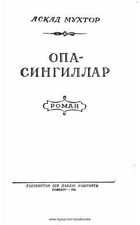

OO'zbek adabiyotining klassik asarlaridan biri bo'lgan ushbu roman xalq hayoti va taqdirini hikoya qiladi.
Asad Mukhtorning ushbu mashhur romani o'zbek xalqining o'tmishi, mehnatkashlarning og'ir hayoti va jamiyatdagi o'zgarishlarni aks ettiradi. Asar voqealari Toshkentdagi mahallalardan birida bo'lib o'tib, inson taqdirlari va kurashlarini ochib beradi.